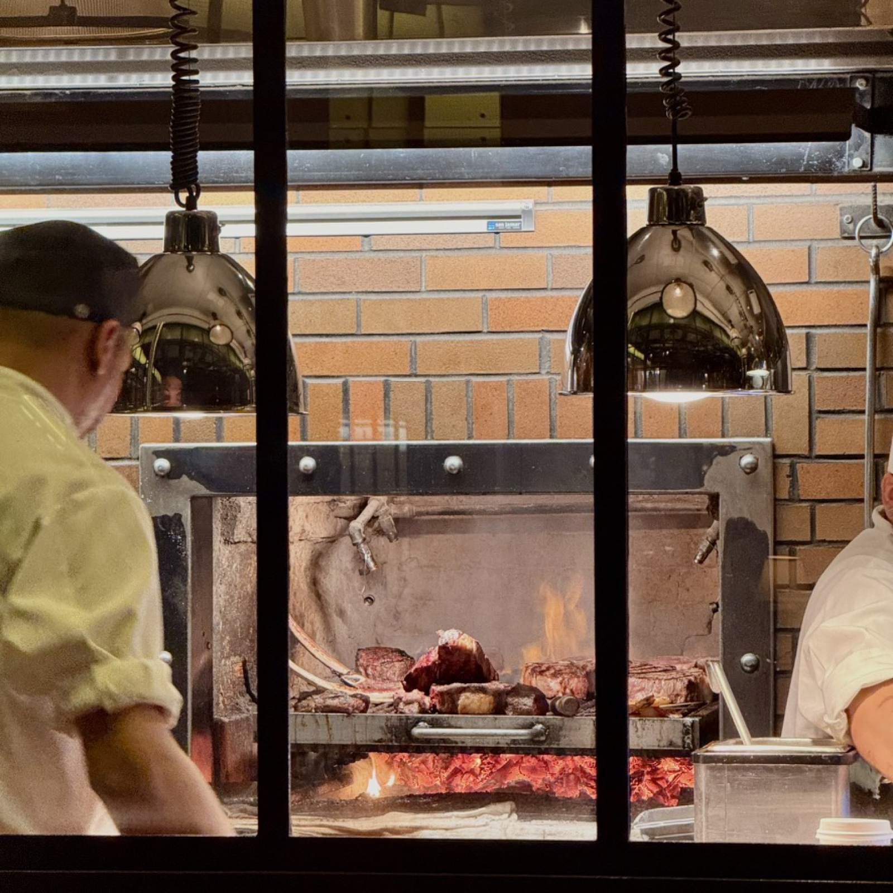
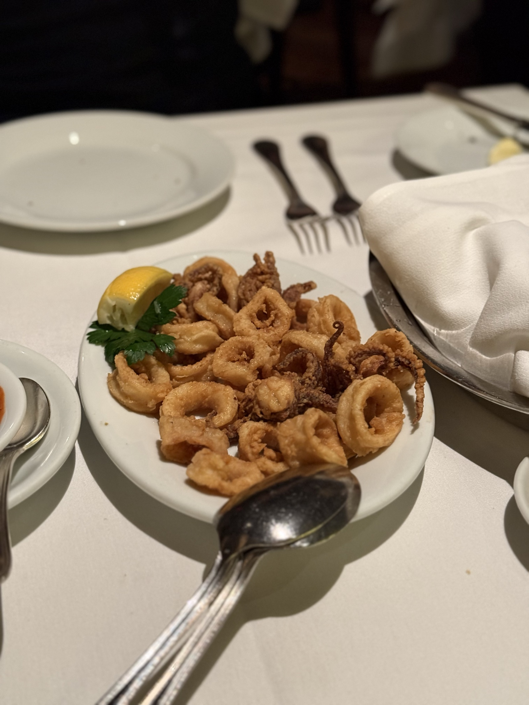
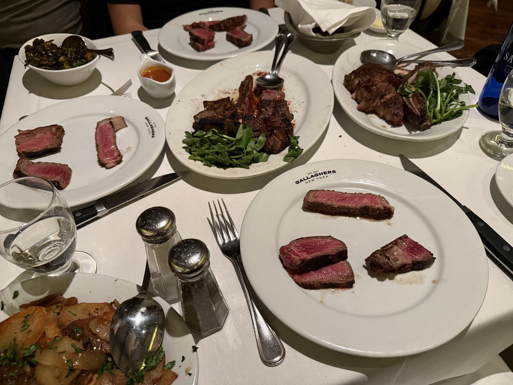
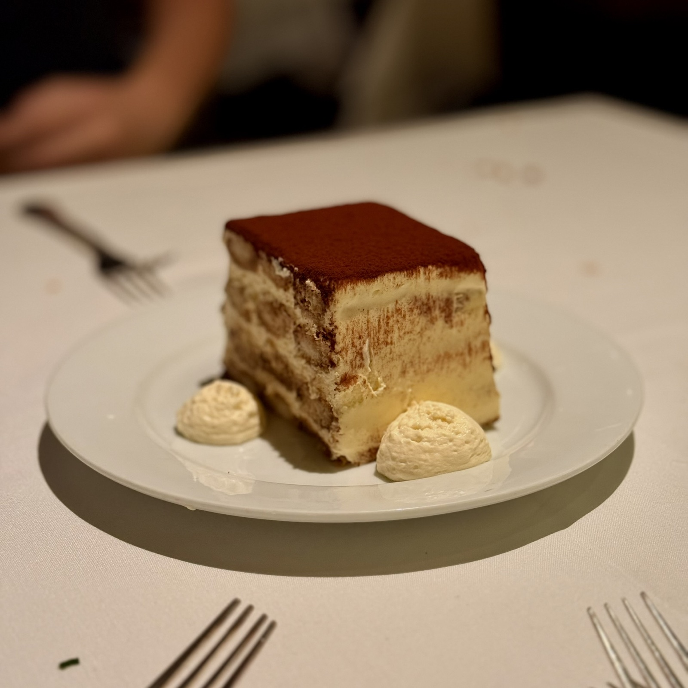

We had just walked out of Carnegie Hall. A piano concerto — the kind of performance that leaves the room in silence for a beat too long before the applause begins. My ears were still ringing with it, the final movement still cycling through my head as we spilled out onto 57th Street into the cold night air.
We weren't looking for anywhere in particular. We just walked. And somewhere between Carnegie Hall and Eighth Avenue, we looked up and saw it: Gallagher's Steakhouse, its name glowing in that no-fuss, old-money way that only New York institutions can pull off. We walked in.
The Entrance
You know a steakhouse is serious the moment you step through the door. At Gallagher's, the first thing you see isn't a host stand or a coat check — it's the meat. A glass-fronted dry-aging room lines the entrance, and behind it hang enormous cuts of beef at various stages of their transformation: deep burgundy, marbled, dusted with the faint bloom of age. It's theatrical in the best way. This is their whole argument, right there in plain view before you've even been seated.
"The meat speaks before the menu does."
The View from the Table
We were seated at a table with a direct sightline into the open kitchen. I don't know if it was luck or if I'd asked for it — I think I just pointed and the host obliged. Either way, watching the kitchen work was its own form of entertainment.
The grills are wood-fired, and the smoke is real. You can see the flames licking up around the grates, the chefs moving with that particular kind of practiced calm that only comes from doing something hundreds of times. There's no pretense of a performance kitchen — these people are just cooking, and cooking well. The whole dining room smells faintly of woodsmoke and rendered fat, and it smells incredible.
The Food
We started with the calamari. Lightly battered, not greasy, with just enough chew before it gives way — served with a marinara that was bright and acidic in all the right places. A solid opener that didn't try to be more than it was.
Then the steaks arrived. We'd ordered a ribeye and a porterhouse to share, and both came out on the bone, perfectly charred on the outside and exactly medium-rare within. But the real story was the dry age.
I've had dry aged beef before — or thought I had. What Gallagher's does is different. The flavor isn't funky or overwhelming in the way that can sometimes feel like the aging is doing all the work. Here, it's restrained. The aging amplifies the beefiness, concentrates it, makes every bite taste more intensely like what beef is supposed to taste like. And the texture — tender in a way that wet-aged meat simply can't replicate. It cuts cleanly, doesn't fight back, just melts.
The Star of the Night
I expected to be writing about the steaks. I did not expect to be writing about the tiramisu.
It arrived at the table in a generous portion — and I almost passed it off as an afterthought, a dessert to round out the meal politely. Then I took a bite. It was the lightest tiramisu I've ever had. Not light in the way that feels like something was left out, but light in the way that means it was made correctly — the mascarpone whipped to an almost mousse-like consistency, the ladyfingers soaked just enough to be soft without becoming saturated, the coffee flavor present and clean without overwhelming the cream.
I could not stop eating it. I didn't stop eating it. I went back for another portion.
"The steaks were excellent. The tiramisu was unforgettable."
Our waiter — who had been impeccably attentive all evening — mentioned, somewhere between clearing our plates and bringing the check, that he'd been planning to take home the leftover tiramisu for his wife. He'd boxed it up before his shift ended. He took the subway home. He arrived with an empty box. He had eaten the entire thing on the train.
I cannot say I blame him.
The Ambiance
Gallagher's opened in 1927. You feel every year of it — and I mean that as the highest compliment. The lighting is dark and warm, the kind that makes everyone look better and makes conversations feel more honest. White tablecloths, dark wood paneling, walls covered in framed photographs of the athletes, politicians, and performers who've eaten here across a century of New York life. The architecture hasn't been renovated into something contemporary and soulless. It's been maintained.
It is exactly what a classic New York steakhouse should be — which is increasingly rare. Walking out onto 52nd Street after, the city felt a little more like itself. The kind of night that reminds you why people come here and why they stay.
"Some restaurants are experiences. Gallagher's is an institution."
Gallagher's Steakhouse
📍 228 W 52nd St, New York, NY 10019
🕐 Mon–Thu 12pm–10pm · Fri–Sat 12pm–11pm · Sun 12pm–9pm
💰 Steaks from ~$60 · Reservations recommended